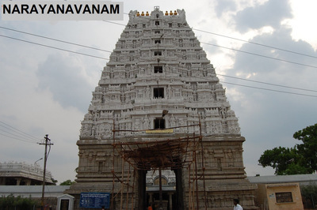
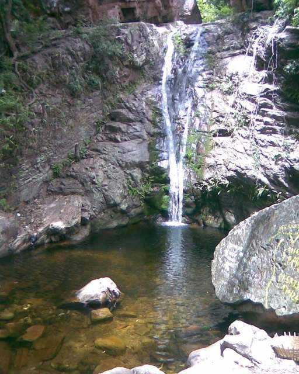
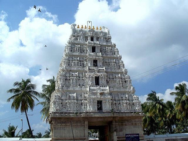
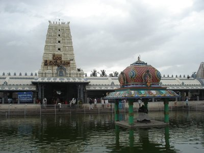
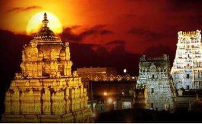
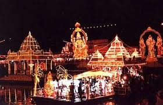
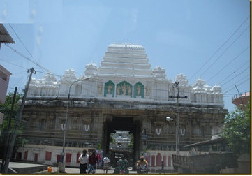
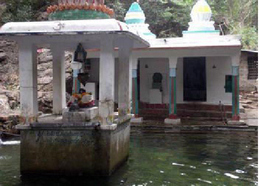
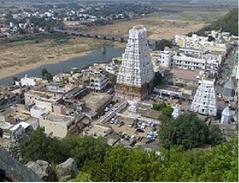

Kailasanatha Kona - 8 KMs
(water falls and Kailsanatha swamy temple)
Kailasanatha kona water falls is situated in the valley of Nagiri
hills near Puttur.The water here is said to be rich in minerals and
posses curative properties. Puranas reveal that
Lord Kailasanatha swamy attended the marriage of Lord
Venkateswara Swamy and goddess padmavati at Narayanavanam
and selected this water fall for meditation .Hence, this place is
called Kailasanatha kona which is a picnic, scenic and pituresque
spot. There are no of buses, travels available from puttur town. Direct
Buses are available from Puttur Bus stand. Also, a number of shared
autos available. On weekend 100s of tourist come majorly
from Chennai. Weekdays is less crowded. Tourists trek the
mountain to swim in few of the wells, but so high. It is believed that
there are 7 wells up the hill from were water falls.
If wish to stay in a hotel near by:-
Punnami High way Resort,
By Pass Road, Puttur,
Chittor District.
Phone : 08577-220777 AP
Tourism resorts are also available right at the water falls.
Kalyana venkateswara temple- 6KMs
Sri Kalyana Venkateswaraswami temple at Narayanavanam is 40 km
from Tirupati. This is the place where Sri Venkateswara Swami and
Padmavathi got married.
Beside this temple, we also have
Sri Pavasaverwara Swami Temple
Sri Veera Bhadra Swami Temple
Sri Sakthi Vinayaka Swamii Temple
Sri Agustheeswara swami Temple
Sri Avanakshamma Temple
The Speciality of this temple is Lord appears with open eyes.
Due to this devotees will greatly enjoy the visit to temple.
Lakshmi Devi can be seen on the chest of Sri Kalyana
Venkateswara. Here the largest Tirugali(grinder) can be seen.
It is said that,on the day of marriage of god and goddess,
Nalugu is done with the flour that is taken from tirugali.
Sadasiva Kona - 13 KMs
( water falls and sadasiva temple)
The Sadasiva Kona is famous for its waterfalls and is a religious
location as well as, a nature spot situated remotely on the
Puttur-Tirupati route and just 10 km from Majjiga Gunta.
The place is densely populated with thick trees and vegetation and
mountain heads covering around giving a panoramic view of water
fall.The temple of Lord Shiva along with his wife Goddess Kamakshi
is situated near the waterfalls and the major festivals celebrated here
are Maha Shivaratri, Vaikunta Ekadasi and special pujas on
Mondays during the Karthika Masam.
During these days devotees in a large numbers visit the temple from
several parts of the state and Tamil Nadu state as well. The temple was
constructed by the king of Karvetinagaram who patronized and
worshipped Lord Sadasiva and Goddess Kamakshi.
VenugopalaSwami Temple -10kms
This is at Karveti Nagaram Near Puttur(10 KMs) which is at a distance
of 48 km from Tirupathi. This temple can also be reached by bus from
Puttur to chittoor in 15 mins were frequency of buses are for every
15 mins. As this town (nagaram) was built by cutting the forest,
it got the name Karveti Nagaram.
This temple is believed to be built in 15th century. The main diety in this
temple is Venugopalaswamy. The main idol in this temple has cow
behind him and with Makara Thoranam, all in single statue.
The idol has four hands with Shanku and Chakra in one hand of each side.
Goddesses Rukhmini Devi is on the left and Satyabhama on the right side
of the Lord Venugopalaswamy. There is another temple of Sri
Kodhanda Ramaswamy behind this temple in the same campus.
There is a tank at a distance near the temple where 'Teppotsavam'
is held every year.
The 'Gali Gopuram' of this temple was build in the year 1779 AD
according to the inscriptions in the temple. Thus tihs temple is believed
to be build much prior to 1779 AD. This Gopuram is 80 feet high.
According to an inscription inside the temple, Raja Raja Chola
has performed Yagna in this temple and donated land to many
Shiva temples.
.
Kanipaka Vinayaka Temple - 80KMs
Kanipakam is home for temple of Lord Ganesha called as Kanipakam
Vinayaka Temple .
It was constructed in the early 11th century CE by the Chola king
Kulothunga Chola I and was expanded further in 1336 by the
Emperors of Vijayanagara dynasty.
Local legends claim that the idol of Ganesha continuously grows in size.
The temple was too small to be patronized by Chola and Vijayanagara
kings. The temples of Cholas and Vijayanagaras are normally
magnificent in size and grandeur. Most of the present structures are
of recent origin and the present major developmental and
construction activities of the temple are well supported by offerings
given to the temple by the devotees.This temple became widely known
only in the past 10–15 years.
Prior to this it was popular only in and around the Chittoor district, but AP
government has been promoting tourism. In addition, the number of
buse which run between Tirupati and the local temples allows pilgrims
greater transportation flexibility. Reach Chittoor from puttur in Bus
and From chittoor you have every15 mins bus frequency to kanipakkam
which is another 15KMs from chittoor.
Tirupati Tirumala venkateswara temple-
35KMs
( LordBalaji)
Tirumala Venkateswara Temple (also known as Sri Venkateswara
Swamy vaari temple and Thiruvengadam Temple) is in the hill
town of Tirumala, near Tirupati in the Chittoor district of Andhra
Pradesh.
It is around 600 km (370 mi) from Hyderabad , 138 km (86 mi) from
Chennai and 291 km (181 mi) from Bangalore and 35 KMs from
puttur.
The Tirumala Hill is 853m above sea level and is about 10.33 square
miles (27 kms) in area. It comprises seven peaks, representing
the seven heads of Adisesha , thus earning the name Seshachalam.
The presiding deity of the temple is Lord Venkateswara, avatar of the
Hindu god Vishnu . Venkateswara is known by other names: Balaji,
Govinda, and Srinivasa. The temple lies on the southern banks of
Sri Swami Pushkarini, a holy water tank. The temple complex
comprises a traditional temple building, with a number of modern
queue and pilgrim lodging sites.
The temple is the richest pilgrimage centre, after the Sree
Padmanabhaswamy Temple in Thiruvananthapuram , Kerala ,
of any faith (at more than 50,000 crore ) and the most-visited place of
worship in the world.
The temple is visited by about 50,000 to 100,000 pilgrims daily
(30 to 40 million people annually on average), while on special
occasions and festivals, like the annual Brahmotsavam, the number
of pilgrims shoots up to 500,000,making it the most-visited holy
place on earth.
There are several legends associated with the manifestation of the Lord
in Tirumala. According to one legend, the temple has a murti (deity) of
Lord Venkateswara, which it is believed shall remain here for the entire
duration of the present Kali Yuga .
Tiruthani Subramanya swamy temple-
35KMs
Tiruthani Murugan temple is in the hill of Thiruttani , Tamilnadu,India,
dedicated to Lord Muruga .
The hill has 365 steps indicating 365 days of the year.It is one of the
Arupadaiveedu , the six holy abodes of Lord Muruga. The other five are:
Palani (56 km west of Dindigul , Swamimalai (5 km east of Kumbakonam),
Tirupparangunram (5 km from Madurai), Pazhamudircholai (25 km north
of Madurai) and Thiruchendur (165 km south of Madurai).
Besides the monthly Krittikais which attract a large number of devotees to
this shrine, the two outstanding annual festivals are the Aadi Krittikai and
the 31st of December New Year Step Festival. Apart from its puranic
greatness, Saint Arunagirinathar has praised this hill as the chosen
place for worship by devas and the favorite abode of saints performing
prolonged tapas.
He also compared this hill to Sivaloka (Bhuloka) and as the very soul of the
world. Sri Muttuswami Deekshitar , who lived 200 years ago (one of the trinity
of Carnatic music) had his inspiration in Tiruttani when the Lord (in the guise
of an old man) met him on the steps and sweetened his tongue with the
prasadam of this temple,which impelled him to compose and render his
first krithi "Shri Nathadhi Guruguho Jayathi Jayathi"(song) on Lord Murugan of
Tanikai. The temple vimanam was covered by gold
Vedanarayanaswamy Temple Nagalapuram -
25 KMs
Temple reflects the vijayanagara architectural style Vedanarayana swamy idol facing
west. Temple has got 4 big gali gopuralu. The sanctum sanctorium has Vedanarayana
swamy with his consorts sridevi and Bhoodevi on either side.
This is a Matysa Avatar of Loard Vishu first Avatar, who saved the four vedas
from Somakudu and returned to Brahma .
This temple town is built at the time of Srikrishna Deva Raya Regime on remembrance
of his mother Nagala Devi. Hence it became Sri Nagalapuram. Before the change of
its name to Nagalapuram, this village was known by the
name Harigandapuram. Nagala Devi was a family member of Gajula balijas.
Temple architecture is done in such a way that during these three days, the
sun rays fall on the main deity feet, navel and fore head between 1800 hrs
and 1815 hrs respectively called as " Suriya Pooja". This remarks the
start of Summer season as per the holy inscriptions available in the temple.
The temple is under TTD. There is daily TTD bus service from Tirumala
to Nagalapuram and other temples. You also have us service from town
of puttur.
Moola Kona waterfalls - 8 KMs
The Gajapath hill is an ideal spot for picnickers and trekkers, lending its beauty
with one of the most visually pleasing waterfalls. The hill is covered with
herbal floral greenery and the water passes through them seems so crystal
clear water reaches a small pond through two cascades.
One coming from the eastern part of the hill opposite to the temple of
Goddess Parvathi Devi shrine facing north and the other from the northern part
of the hill, just opposite to Lord Sangameshwara Swamy shrine facing east ,
water from the hill falls into a small pit of about 10feet deep and reaches the
pond and the other cascade passes to the .Lord Jalalingeshwara swamy along
with a nandhi is installed in the middle of the pond on a 7 feeted platform .
Lord Ganesha facing north are also installed here just beside the pond.
Puranic Say:- This is the sporting place of Alamelumangathayaru daughter
or Akasaraju, where Lord Srinivas (in human form ) saw adorable/
charming Alamelumangathayaru for the first time and inspired of her beauty
and fallen in love.
SriKalahasti Temple
Srikalahasti Temple is located in the town of Srikalahasti. It is one of the
most famous Shiva temples in South India, and is said to be the site
where Kannappa was ready to offer both his eyes to cover blood flowing from
the Siva linga before the Lord Siva stopped him and granted him mukti .
Sri Kalahasti temple, situated 36 km away from Tirupati is famous for its
Vayu linga, one of the Panchabhoota Sthalams, representing wind.
The inner temple was constructed around 5th century and the outer
was constructed in the 12th century by the Chola kings and theVijayanagara
kings. Vayu is incarnated as Lord Shiva and worshiped as Kalahasteeswara.
Rahu – Kethu Sarpa Dosha Nivarana Puja
Srikalahasteeswara Swamy Temple is reputed as the Rahu Kethu Kshetra,
If the People who have Rahu Kethu Doshas and Sarpa Doshas, the
unmarried ,Couple with no children and those who are facing various problems
for long period perform this most effective Rahu – Kethu Sarpa Dosha
Nivarana Puja in this Temple all the Doshas get removed and desired
results occur.
Thousands of Devotees from the country and abroad perform this puja and
fulfill their vows again and again after receiving good results. Rahu – Kethu
Sarpa Dosha Nivarana Puja can be performed daily between 6:30 A.M
and 9:00 P.M. This is a popular puja undertaken by devotees at this temple.

© 2013 putturtown.com. All rights reserved










Puttur Group @
Page Hits